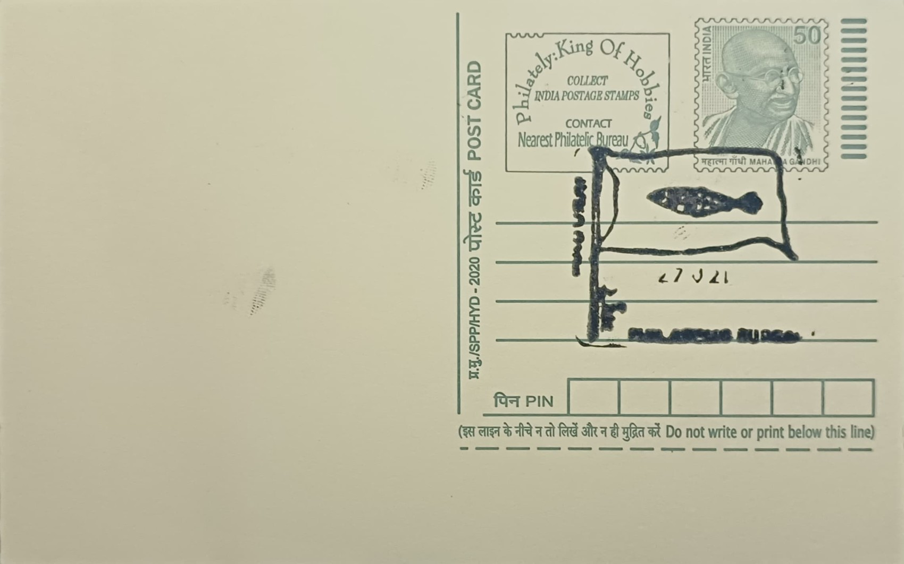

Flag of Pandya Dynasty with Aquarius Emblem
கும்ப இராசி சின்னத்துடன் பாண்டிய அரசின் கொடி


The fish that appears on the Pandya banner is first attested in Tamil literary tradition rather than in any single foundational charter: the Sangam-era epic Silappatikaram already describes the Pandya standard as bearing a fish, and the device recurs across inscriptions, temple reliefs and coinage over the following centuries. No physical specimen of an early Pandya flag survives, so modern depictions, including the paired fish flanked by a central object sometimes read as a pot or celestial emblem, are reconstructions drawn from these textual and sculptural references rather than from an original relic. The name of the dynasty's patron goddess, Meenakshi, meaning fish-eyed, reinforces how deeply the fish motif was woven into Madurai's civic and religious identity from an early period.
The Pandyas ranked among the three classical Tamil ruling houses, alongside the Cholas and Cheras, and their territory centred on the far south of the peninsula with Madurai, and earlier the port town of Korkai, serving as successive seats of power. Greek sources, including the ethnographer Megasthenes writing around 300 BCE, already named Madurai as the Pandya capital, indicating the dynasty's visibility in long-distance trade networks of the period. Tradition credits Pandya patronage with convening the Sangam literary assemblies at Madurai, and this association with classical Tamil scholarship, rather than military conquest alone, forms the core of the dynasty's historical standing. The fish emblem itself is widely interpreted by historians as a reference to the kingdom's maritime economy and control of valuable coastal and riverine fisheries.
The dynasty's political history was discontinuous: after early Sangam-age prominence, Pandya power lapsed during the obscure Kalabhra interregnum before being restored under Kadungon in the early sixth century, who drove out the Kalabhras and re-established Madurai as a royal seat. A second, more expansive phase followed from the late thirteenth century under rulers such as Jatavarman Sundara Pandya, during which Pandya forces extended control into northern Sri Lanka and the kingdom reached its widest territorial extent before yielding to Delhi Sultanate incursions and eventual decline by the sixteenth century. Surviving Pandya coinage from this later medieval period shows the paired-fish device explicitly, in some issues flanking a vertical sceptre or crozier, confirming the emblem's continuous use as a mark of royal authority across several centuries of intermittent rule.
Beyond statecraft, the Pandyas are remembered chiefly as builders, and their patronage runs through the architectural history of the Meenakshi Amman Temple in Madurai, whose core shrines and early structure owe much to Pandya-era sponsorship even though the complex as it stands today was substantially rebuilt and expanded by the later Nayaka rulers. The fish emblem appears repeatedly in the temple's sculptural and decorative vocabulary, linking the ruling dynasty's heraldic identity directly to the sacred architecture of its capital. This overlap between dynastic symbol and temple iconography is one of the clearest surviving physical records of Pandya visual culture, given the absence of any intact original flag or comparable regalia.
Today the Pandya fish emblem is studied primarily through numismatics, temple epigraphy and literary references housed in institutions such as the Tamil Nadu state archaeology department and various university Tamil studies programmes, which continue to catalogue Pandya-era coins and inscriptions bearing the device. The postal pictorial cancellation issued at Madurai Head Post Office draws on this same visual legacy, using the dynasty's fish-and-emblem motif to mark a city whose urban identity remains organised around the Meenakshi Amman Temple at its centre. In that sense the cancellation functions less as a historical artifact in its own right and more as a civic shorthand, reviving a thousand-year-old royal mark on a piece of everyday postal material still handled at the same post office that sits within sight of the temple the Pandyas helped found.
| Date of Introduction | September 6, 1981 |
|---|---|
| Address | Senior Postmaster, |
| Madurai HO, | |
| Madurai (dt.), Tamil Nadu - 625001. |